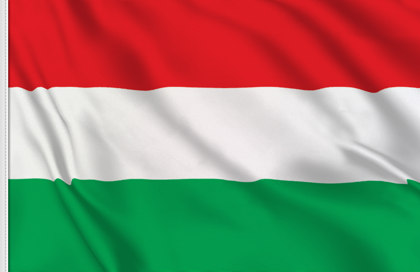

Índice
GastronomiaInformações gerais
Capital: Budapeste
Lingua oficial:: Húngaro
população: 9 730 772
Continente: Europa
Moeda oficial: Forinte Húngaro
Geografia
Com 93 000 km², a Hungria é um dos maiores países da Europa Central. Tem fronteiras dina com sete paises diferentes (Sérvia, Croácia, Eslovênia, Ucrânia, Romênia, Eslováquia e Áustria) que a cercam.
A sua população é estimada em 9 730 772 de habitantes, apresentando um decréscimo populacional desde os últimos censos oficiais. Tal fato vem ocorrendo nos últimos anos, seguindo uma tendência de todos os países do leste europeu.
A sua maior cidade é a capital Budapeste, que na sua área metropolitana tem cerca de 2 550 000 habitantes. Com menor proporção, Debrecen, é a segunda maior com cerca de 205 000 habitantes.

Sistema Político
A Hungria é uma república parlamentar com um chefe de governo – o primeiro-ministro, que exerce o poder executivo, e um chefe de Estado – o presidente, com funções principalmente de representação. A Hungria está dividida em 19 condados, a capital Budapeste e 23 cidades com direitos de condado.
Atualmente o país tem como presidente Katalin Novák e como rpimeiro ministro Viktor Orbán.
Gastronomia
A culinária húngara tem uma posição de destaque na cultura da Hungria, com tradicionais pratos como o goulash, difundido por todo o mundo e uma das bases da culinária húngara.

Os pratos são geralmente temperados com páprica, cebola e pimenta preta. Os guisados são, comumente, encontrados com elementos tradicionais como carne de porco e de gado.